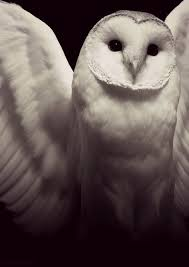

Home
Links
Linking to Places
Here are some links to become an owl expert and all that great stuff.
click to become an owl guru
A link to wikipeadia for owls
A few fun facts about owls

A website on the owl as a spirit animal